Como funciona
- O site fica guardado, de graça, num serviço chamado GitHub.
- Hoje, só o André tem acesso, com a conta dele.
- O Américo vai criar a conta dele no GitHub, com o e-mail dele.
- O André convida o Américo para ser dono do site também.
- O Américo aceita o convite, e pronto: os dois têm acesso.
Antes de começar
- Um computador com internet.
- O e-mail do Américo aberto, para receber os avisos.
- Papel e caneta, para anotar o nome de usuário e a senha.
- As telas do GitHub são em inglês: o vídeo traduz cada botão.
Parte 1: o Américo cria a conta dele
Feita pelo Américo
1Na barra de endereço, digite: github.com/signup e aperte Enter
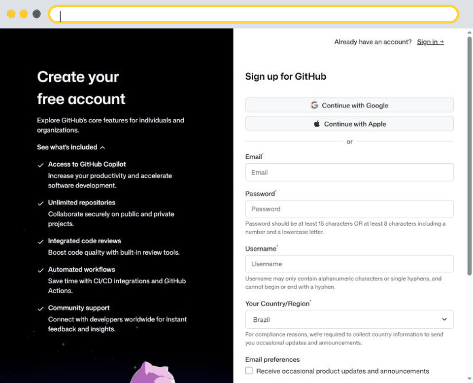
Abra o navegador de internet, por exemplo o Google Chrome. Clique na barra de endereço, lá em cima, e digite: github.com/signup. Signup quer dizer cadastrar-se. Depois, aperte a tecla Enter. Vai abrir esta página, para criar a sua conta.
2Em “Email”, escreva o seu e-mail
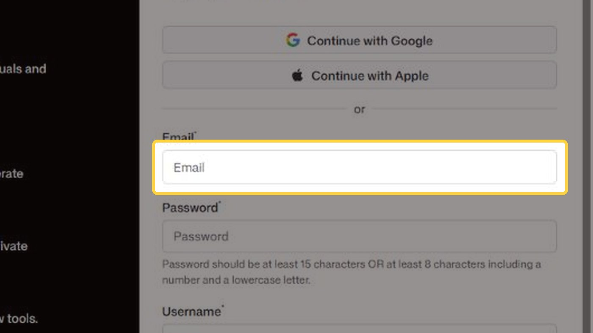
No campo escrito Email, clique e escreva o seu e-mail, o mesmo que você usa no dia a dia. É para esse e-mail que o GitHub vai mandar os avisos.
3Em “Password”, crie uma senha (pelo menos 8 letras e números) e anote no papel
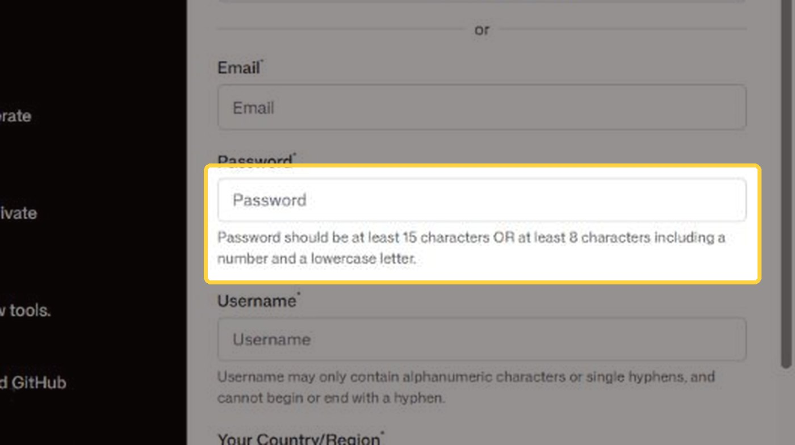
Logo abaixo, no campo Password, que quer dizer senha, crie uma senha nova. Ela precisa ter pelo menos oito caracteres, misturando letras minúsculas e números. Por exemplo: uma palavra que você lembre, seguida de alguns números. Anote essa senha no papel, com cuidado, e guarde em lugar seguro.
4Em “Username”, escolha um nome de usuário, por exemplo: americo-silva
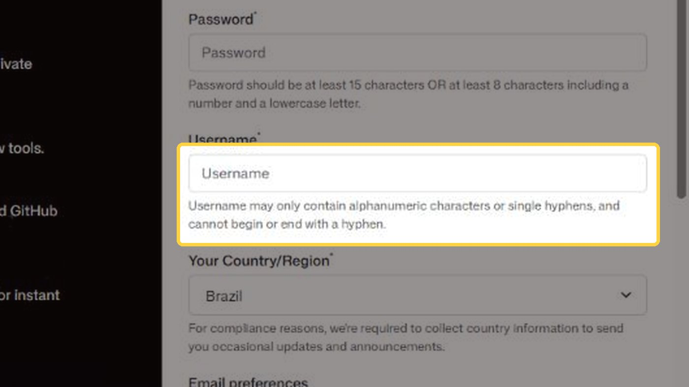
Agora, no campo Username, escolha um nome de usuário. É o seu apelido dentro do GitHub. Use só letras, números e tracinhos, sem espaço e sem acento. Por exemplo: americo-silva. Se o nome já estiver sendo usado por outra pessoa, o GitHub avisa, e você tenta outro, como americo-silva-rio. Anote no papel o nome de usuário que você escolheu, porque o André vai precisar dele.
5Confira o país (Brazil) e clique no botão verde “Create account”
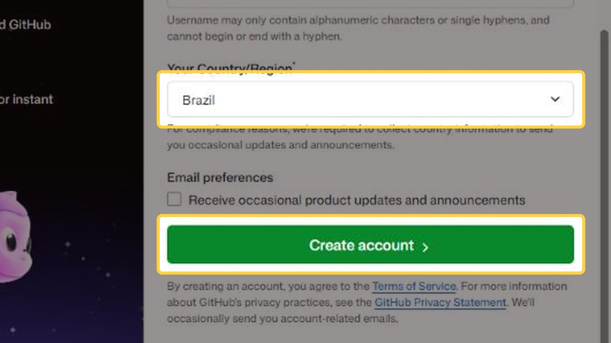
Desça um pouco a página, girando a rodinha do mouse. Confira se o país está como Brazil, que é Brasil em inglês. A caixinha de receber novidades pode ficar desmarcada. Depois, clique no botão verde, escrito Create account, que quer dizer criar conta.
Confirme que você é uma pessoa
- O GitHub pode mostrar um pequeno desafio, como escolher uma figura.
- Siga a instrução da tela, com calma.
- Depois, ele manda um código para o seu e-mail.
- Abra o e-mail do GitHub, copie o código e digite na página.
- Pronto: a sua conta está criada!
Parte 2: o André convida o Américo
Feita pelo André
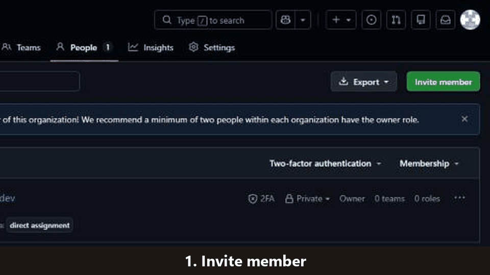
1André: abra github.com/orgs/americoluismartinsdasilva/people
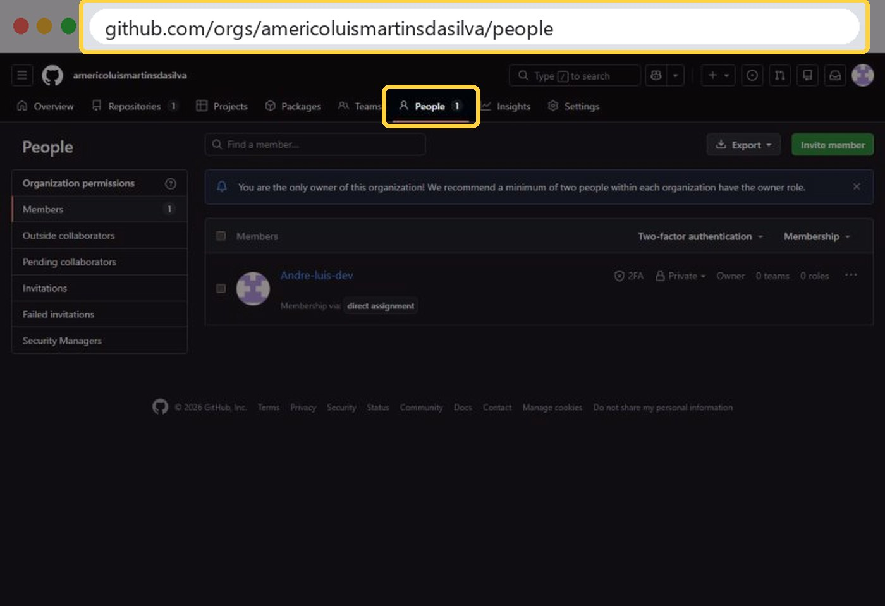
André, entre na sua conta do GitHub, e abra este endereço: github.com/orgs/americoluismartinsdasilva/people. É a página das pessoas que têm acesso ao site. Hoje, só aparece você.
2Clique no botão verde “Invite member” (convidar membro)
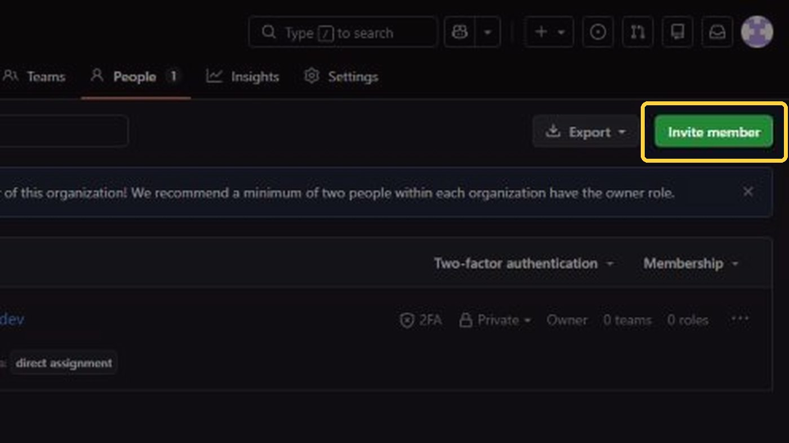
Clique no botão verde, no canto direito, escrito Invite member, que quer dizer convidar membro.
3Digite o nome de usuário do Américo e escolha o nome dele na lista; depois clique em “Invite”
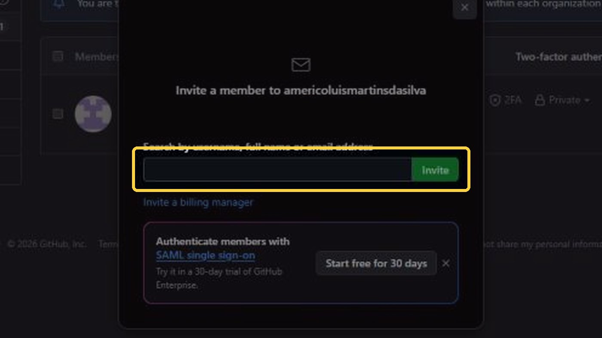
Vai abrir esta janela. No campo de busca, digite o nome de usuário que o Américo criou, aquele anotado no papel. O GitHub mostra o nome dele numa listinha: clique nele. Depois, clique no botão Invite, que quer dizer convidar.
4Marque “Owner” (dono) — assim o Américo terá o mesmo acesso que o André
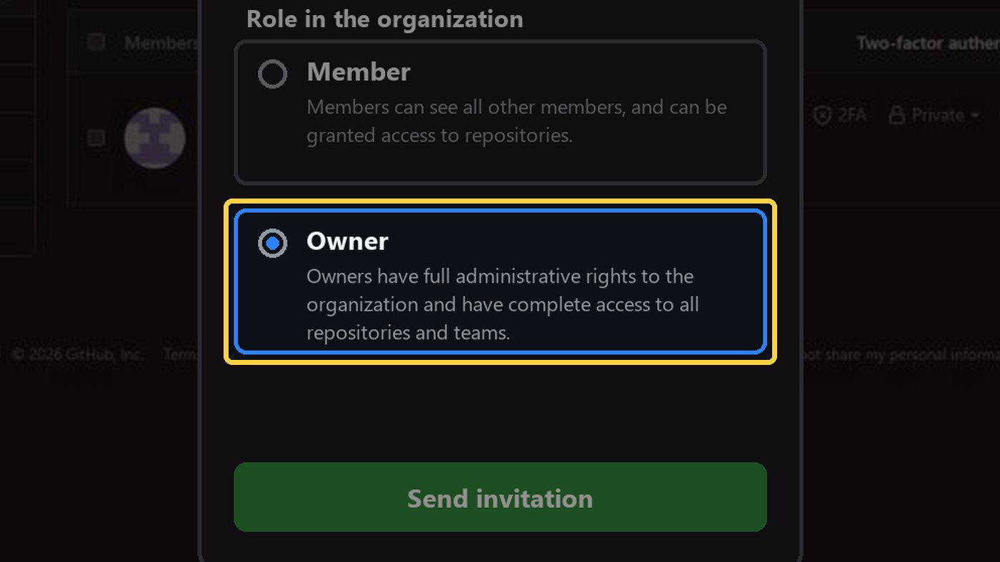
Agora, o GitHub pergunta qual será o papel do Américo. Marque a opção Owner, que quer dizer dono. Assim, o Américo terá o mesmo acesso que você, André: os dois serão donos do site. Não escolha Member, porque esse papel tem acesso limitado.
5Clique em “Send invitation” (enviar convite)
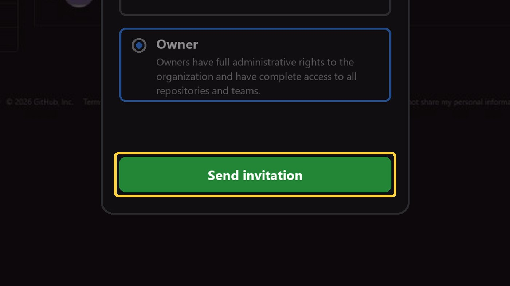
Por fim, clique no botão verde Send invitation, que quer dizer enviar convite. Pronto! O convite vai para o e-mail do Américo. Você continua sendo dono do site, normalmente.
Parte 3: o Américo aceita o convite
Feita pelo Américo
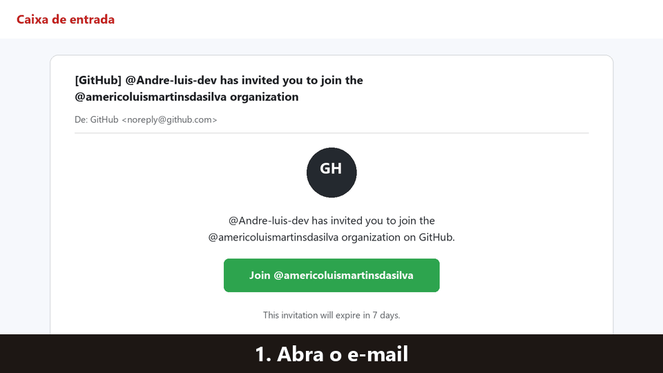
1Abra o e-mail do GitHub: “… has invited you to join …”
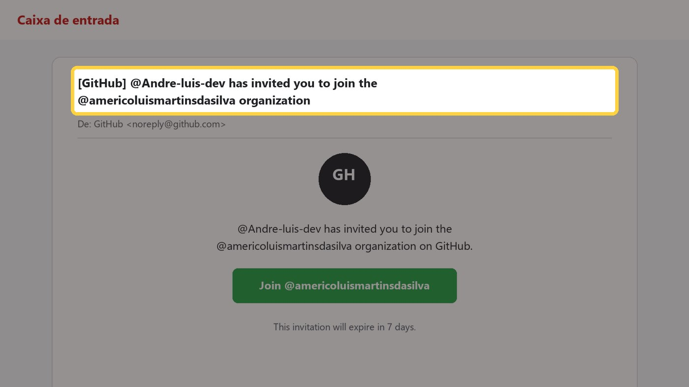
Américo, abra o seu e-mail. Vai chegar uma mensagem do GitHub, dizendo que o André convidou você para entrar na organização americoluismartinsdasilva. Organização é o nome que o GitHub dá para o espaço onde fica o seu site. Se não encontrar, olhe também na pasta de spam ou de promoções.
2Clique no botão verde “Join @americoluismartinsdasilva” (entrar)
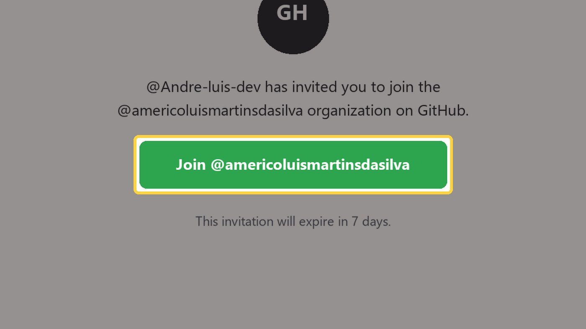
Dentro do e-mail, clique no botão verde escrito Join, que quer dizer entrar. Atenção: o convite vale por sete dias. Se passar desse prazo, é só pedir para o André mandar outro.
3No GitHub, clique de novo no botão verde “Join” para confirmar
O navegador vai abrir a página do GitHub. Se ele pedir, entre com o seu nome de usuário e a sua senha. Depois, clique de novo no botão verde Join, para confirmar. Pronto! Agora você também é dono do seu site.
Parte 4 (opcional): e-mail de contato
Feita pelo André ou pelo Américo
1Abra: github.com/organizations/americoluismartinsdasilva/settings/profile
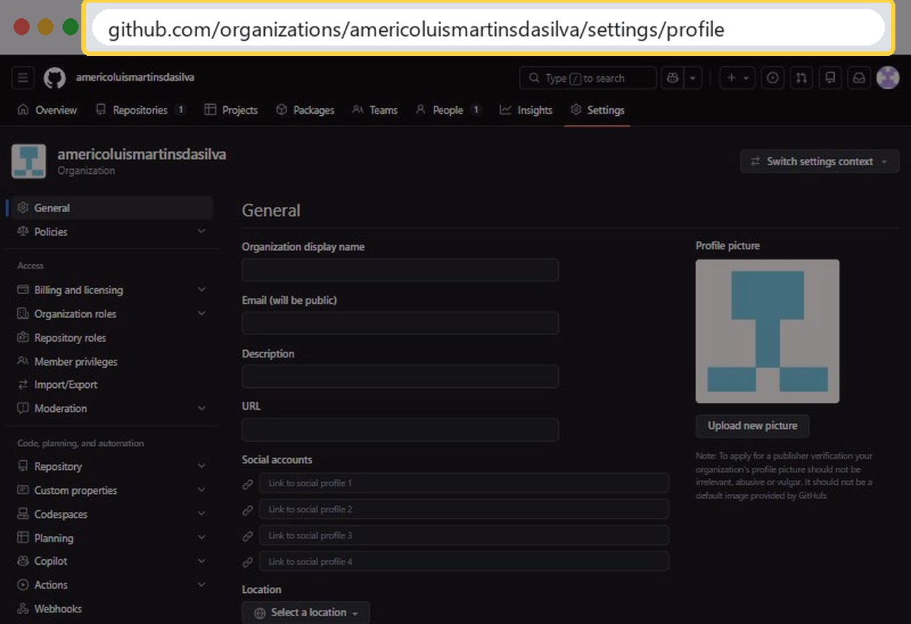
Este passo é opcional. Os avisos do GitHub sobre o site vão para o e-mail de contato, que hoje é o do André. Se vocês preferirem que esses avisos cheguem para o Américo, abram este endereço: github.com/organizations/americoluismartinsdasilva/settings/profile. Lembrando: os dois continuam com acesso ao site, não importa qual e-mail fique aqui.
2Em “Billing email”, apague o e-mail atual e escreva o e-mail do Américo
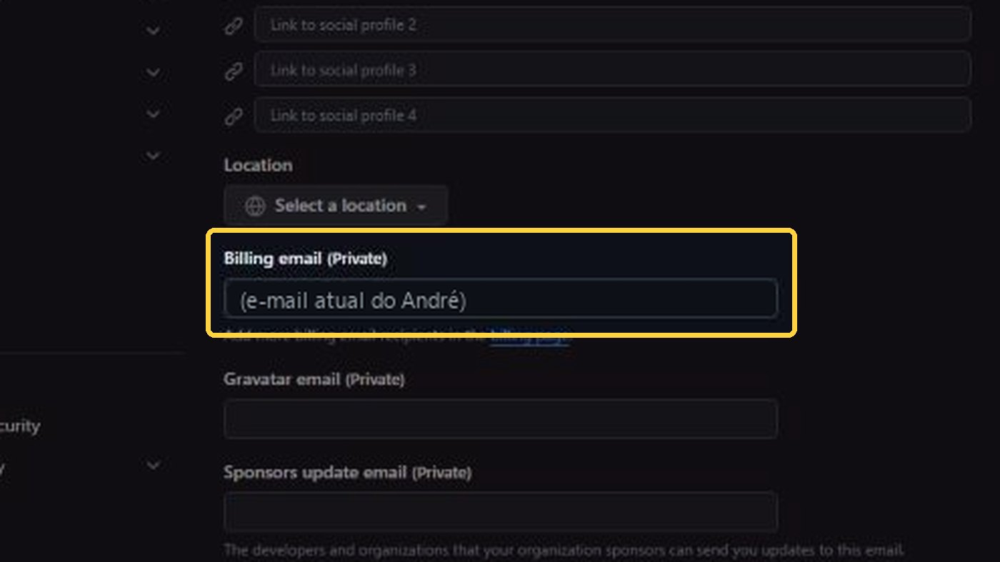
Desçam a página, girando a rodinha do mouse, até o campo Billing email, que quer dizer e-mail de cobrança. Não se preocupem: o site é gratuito, não há cobrança nenhuma. Apaguem o e-mail que está lá e escrevam o e-mail do Américo.
3Clique no botão verde “Update profile” (salvar)
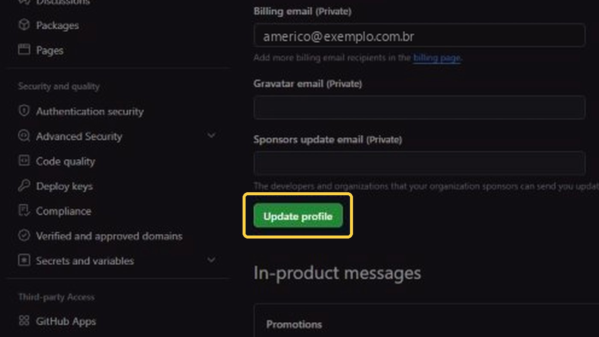
Depois, cliquem no botão verde Update profile, que quer dizer atualizar o perfil. Pronto, o e-mail foi trocado.
Tudo pronto!
- O Américo e o André são donos do site.
- Cada um entra com a própria conta e senha.
- Guarde o papel com o usuário e a senha em lugar seguro.
- Próximo guia: como adicionar e editar livros no site.